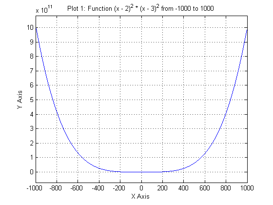
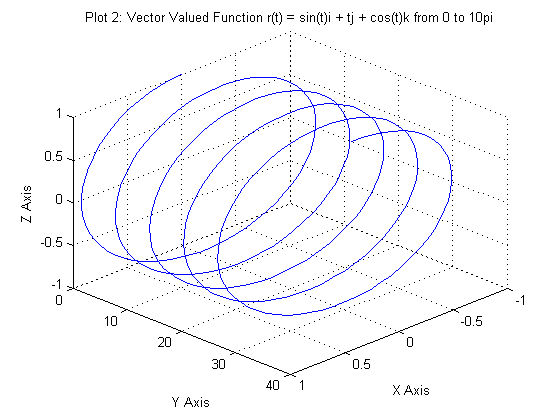
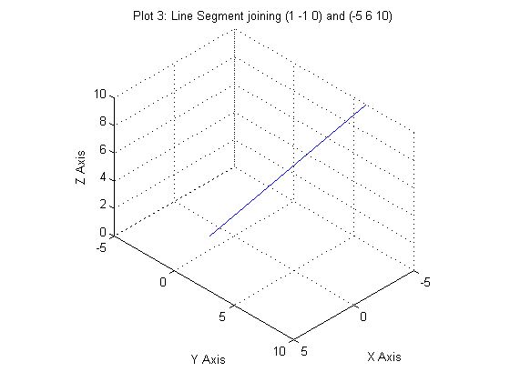
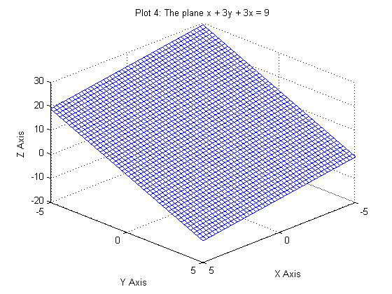
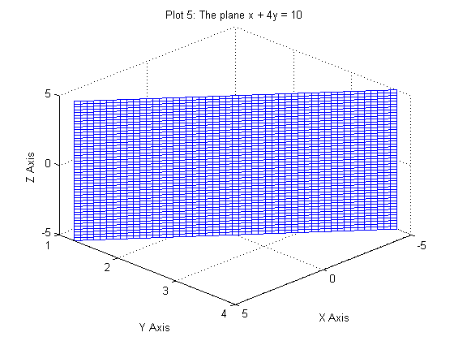

Emmanuel Taylor
MATH241 - Calculus III September 21, 2014 Section 0221 Matlab Assignment 1
PROBLEM 1
Clear Matlab completely with clear all.
clear all
PROBLEM 2
Define symbolic variables x and t.
syms x t
PROBLEM 3
Set t to be a real variable.
sym(t, 'real')
ans = t
PROBLEM 4
Add 10 and 17.
problem4 = 10 + 17
problem4 =
27
PROBLEM 5
Factor the polynomial x^5 - 3x^4 + x^3 + 5x^2 - 6x + 2.
problem5 = factor(x^5 - 3*x^4 + x^3 + 5*x^2 - 6*x + 2)
problem5 = (x^2 - 2)*(x - 1)^3
PROBLEM 6
Solve the equation x^2 + 4x - 1 = 0.
problem6 = solve(x^2 + 4*x - 1)
problem6 = 5^(1/2) - 2 - 5^(1/2) - 2
PROBLEM 7
Differentiate the function f(x) = (x^2)/(x-1) + cos(x^2).
problem7 = diff((x^2)/(x-1) + cos(x^2))
problem7 = (2*x)/(x - 1) - 2*x*sin(x^2) - x^2/(x - 1)^2
PROBLEM 8
Differentiate the function f(x) = xe^(2x-1) and then plug in -1.
problem8 = subs(diff(x*exp(2*x-1)), x, -1)
problem8 = -0.0498
PROBLEM 9
Integrate f(x) = x^2 + xcos(x).
problem9 = int(x^2 + x*cos(x))
problem9 = cos(x) + x*sin(x) + x^3/3
PROBLEM 10
Find the area under the graph of f(x) = 9 - x^2 and above the x-axis.
problem10 = int(9 - x^2)
problem10 = -(x*(x^2 - 27))/3
PROBLEM 11 PART A
Define the vectors a = 3i + 2j - k and b = i + 3j + 2k.
a = [2 3 -1] b = [1 3 2]
a =
2 3 -1
b =
1 3 2
PROBLEM 11 PART B
Find the projection of a onto b.
projection = (dot(a, b)/(norm(b)*norm(b)))*b
projection =
0.6429 1.9286 1.2857
PROBLEM 11 PART C
Find the unit vector perpendicular to both a and b.
u = cross(a, b) norm1 = norm(u) unitVector = u/norm1
u =
9 -5 3
norm1 =
10.7238
unitVector =
0.8393 -0.4663 0.2798
PROBLEM 11 PART D
Find the sine of the angle between a and b.
sine = norm(cross(a, b))/(norm(a)*norm(b))
sine =
0.7660
PROBLEM 12
Define four points P = (2, -1, 3), Q = (0, 7, 9), R = (4, -9, -3) and S = (7, -6, -6) and then with two subtractions and one dot product all on one Matlab line, show that the line through P and Q is perpendicular to the line through R and S.
P = [2 -1 3] Q = [0 7 9] R = [4 -9 -3] S = [7 -6 -6] dotProduct1 = dot(Q - P, S - R) % Because the dot product of these two lines is zero, it follows that the % two lines are perpendicular to each other.
P =
2 -1 3
Q =
0 7 9
R =
4 -9 -3
S =
7 -6 -6
dotProduct1 =
0
PROBLEM 13
Define two points P = [1 -2 3] and Q = [2 -1 3] and one vector n = 2i + 2j +3k and then with one subtraction and one dot product all on one Matlab line, show that Q is not contained in the plane containing P and normal to n.
P = [1 -2 3] Q = [2 -1 3] n = [2 2 3] dotProduct2 = dot(n, Q - P) % Because the dot product of these two vectors is not zero, it follows % that n cannot be normal to the plane containing P and Q.
P =
1 -2 3
Q =
2 -1 3
n =
2 2 3
dotProduct2 =
4
PROBLEM 14
Define four points P = [5 0 2], Q = [1 1 1], R = [0 1 -2] and S = [1 -2 -1] and then with five subtractions, two cross products, and one dot product all one one Matlab line, find the distance from S to plane containing three other points.
P = [5 0 2] Q = [1 1 1] R = [0 1 -2] S = [1 -2 -1] distance = abs(dot((cross(R - P, Q - P)), S - P)/norm(cross(R - P, Q - P)))
P =
5 0 2
Q =
1 1 1
R =
0 1 -2
S =
1 -2 -1
distance =
2.7085
PROBLEM 15 PART A
Define the vector valued function r(t) = cos(t)i + cos(t)j + sqrt(2)sin(t)k.
r = [cos(t) cos(t) sqrt(2)*sin(t)]
r = [ cos(t), cos(t), 2^(1/2)*sin(t)]
PROBLEM 15 PART B
Find the tangent vector T(t).
v = diff(r) T = simplify(v/norm(v))
v = [ -sin(t), -sin(t), 2^(1/2)*cos(t)] T = [ -sin(t)/(2*abs(cos(t))^2 + 2*abs(sin(t))^2)^(1/2), -sin(t)/(2*abs(cos(t))^2 + 2*abs(sin(t))^2)^(1/2), cos(t)/(abs(cos(t))^2 + abs(sin(t))^2)^(1/2)]
PROBLEM 15 PART C
Find the acceleration vector r''(pi/4)
a = subs(diff(v), t, pi/4)
a = -0.7071 -0.7071 -1.0000
PROBLEM 16 PART A
Plot the following: The function f(x) = (x - 2)^2 * (x - 3)^2.
plot1 = ezplot(((x - 2)^2)*((x - 3)^2), [-1000 1000]) title 'Plot 1: Function (x - 2)^2 * (x - 3)^2 from -1000 to 1000' xlabel 'X Axis' ylabel 'Y Axis' grid
plot1 = 175.0356
PROBLEM 16 PART B
Plot the following: The vector valued function r(t) = sin(t)i + tj + cos(t)k with 0 <= t <= 10pi.
r = [sin(t) t cos(t)] plot2 = ezplot3(r(1), r(2), r(3), [0, 10*pi]) view([10 10 10]) title 'Plot 2: Vector Valued Function r(t) = sin(t)i + tj + cos(t)k from 0 to 10pi' xlabel 'X Axis' ylabel 'Y Axis' zlabel 'Z Axis'
r = [ sin(t), t, cos(t)] plot2 = 175.0367
PROBLEM 16 PART C
Plot the following: The line segment joining (1, -1, 0) and (-5, 6, 10).
P1 = [1, -1, 0] P2 = [-5, 6, 10] pts = [P1; P2] plot3(pts(:,1), pts(:,2), pts(:,3)) view([10 10 10]) daspect([1 1 1]) title 'Plot 3: Line Segment joining (1 -1 0) and (-5 6 10)' xlabel 'X Axis' ylabel 'Y Axis' zlabel 'Z Axis' grid
P1 =
1 -1 0
P2 =
-5 6 10
pts =
1 -1 0
-5 6 10
 PROBLEM 16 PART D
Plot the following: The plane x + 3y + 3z = 9.
syms x y z ezmesh(x, y, 9 - x - 3*y, [-5, 5, -5, 5]) view([10 10 10]) title 'Plot 4: The plane x + 3y + 3x = 9' xlabel 'X Axis' ylabel 'Y Axis' zlabel 'Z Axis' colormap([0 0 1])
PROBLEM 16 PART E
Plot the following: The plane x + 4y = 10.
syms x y z ezmesh(x, (10 -x)/4, z, [-5, 5, -5, 5]) view([10 10 10]) title 'Plot 5: The plane x + 4y = 10' xlabel 'X Axis' ylabel 'Y Axis' zlabel 'Z Axis' colormap([0 0 1])